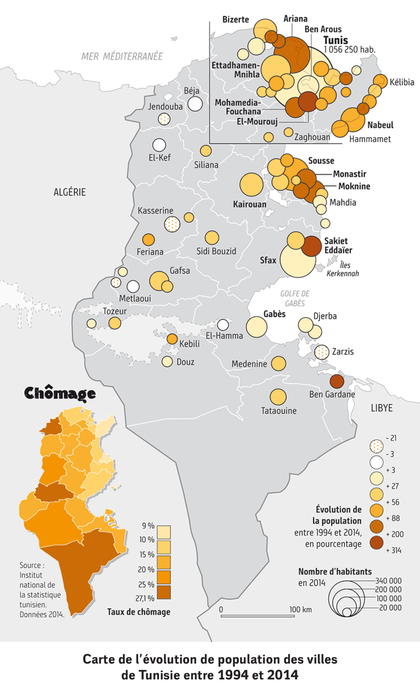
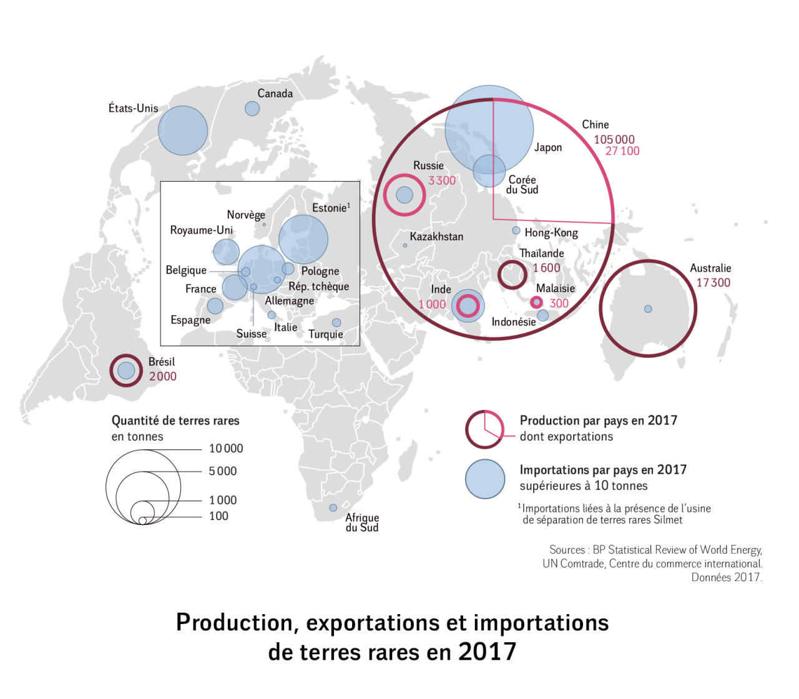

Cartes pour Le Monde Diplomatique
cartographie · août 2018
En août 2018, j’ai effectué un stage au Monde diplomatique auprès de Cécile Marin, la cartographe du journal. Durant ce stage, j’ai travaillé sur deux projets : l’illustration d’un article de Guillaume Pitron intitulé « Voiture électrique, une aubaine pour la Chine », et la création de contenu pour le Voix de faits du Manière de voir N° 160 consacré à la Tunisie. J’ai réalisé plusieurs cartes sur ces sujets, de la recherche et du traitement de données à leur mise en forme sur Adobe Illustrator.
Voir sur le site du Monde diplomatique :

